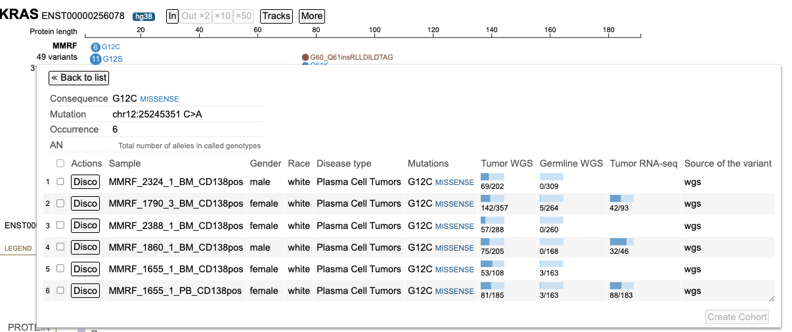

ProteinPaint Tool¶
Introduction¶
The ProteinPaint tool visualizes coding somatic mutations in cancer in an interactive lollipop plot.
For a given gene, it displays mutations associated with that gene as well as genomic position, consequence, and occurrence for each mutation.
Information including disease type and demographic of the mutated cases are also accessible.
Quick Reference Guide¶
At the Analysis Center, click on the 'ProteinPaint' card to launch the app.
{kind=link}
When launched, ProteinPaint will display a search box where users can enter a gene symbol, alias, or GENCODE accession. Once a gene is entered, a lollipop frame is displayed with the name of the chart in the header.
{kind=link}
In addition to the search box, there are two other main panels in the ProteinPaint tool: Lollipop chart, and legend.
{kind=link}
Lollipop Chart Panel¶
After entering a gene, the tool will display a Lollipop chart for the MMRF variants as well as a Protein View for the default isoform.
In the Lollipop chart, the circular discs for each variant are color coded and are proportional in size to the number of occurrences. Variants in the same position are arranged in descending order of occurrences.
{kind=link}
Exon variants report the amino acid change at the referenced codon. For example, G12D is a G > D substitution at the 12th codon of the protein.
The default isoform will appear directly to the right of the gene name. Clicking on the isoform number will open a display to view/select other isoforms and switch the display track.
{kind=link}
Clicking on the number of variants link, to the left of the plot, opens a menu where users can view annotations and manipulate the Lollipop:
- List: Displays all variants, each of which can be selected to launch the annotation table which displays consequence, mutation, sample submitter_id, and other data related to the sample
- Collapse/Expand: Collapses or expands all skewers in the lollipop
- Download: Downloads the mutations in a TXT file
- As lollipops: Displays variants via circular discs proportional to the number of occurrences
- Occurrence as Y axis: Sorts variants on the y-axis by number of occurrences
Clicking on the number of samples opens a window to view annotations grouped by MMRF case properties such as Race and Gender. Selecting a value adds a new Lollipop subtrack that displays only the samples with the given value. This side-by-side view allows for a comparison between the mutations in the main track versus the subtrack.
{kind=link}
Each subtrack offers advanced filtering for users to narrow down particular features.
{kind=link}
Detailed variant annotation is viewable by clicking on the disc next to the variant label. The sunburst chart is composed of a ring hierarchy, arranged by disease types then broken down by primary sites.
{kind=link}
An aggregate table displaying all the samples associated with that variant is available by clicking the 'Info' button in the center of the sunburst.
{kind=link}
The sample table contains a number of columns for various associated features per sample. Users can create a new cohort by selecting the checkboxes in the first column then clicking 'Create Cohort' in the bottom right corner of the table. The table also includes options to launch the Disco plot for each sample.
Protein View¶
The Protein View, which displays the nucleotides, codons in the exon region, introns, and protein domains, is the primary area in which a user will visualize and interact with protein coding regions.
{kind=link}
Legend Panel¶
Protein Domains¶
The Protein View color codes regions by the protein domain present on the full-length protein region in the exon display.
{kind=link}
The legend offers simple filtering for the variants shown in the lollipop. To the right of PROTEIN, users can click on the color to hide that particular protein domain. Clicking on the color again shows the protein domain.
Custom protein domains are added by clicking on the + add protein domain button at the bottom of the list. An input box appears requiring the following information:
- Name, text with space, no semicolon: Name of the protein domain
- Range, two integers joined by space: Codon position - start and stop
- Color (e.g., red, #FF0000, rgb (255,0,0)): Color to assign to the protein domain
MMRF Mutation Class¶
The MMRF mutation class color coding for the lollipop discs appears below the legend for the protein domains.
{kind=link}
Clicking on a mutation class opens a pop-up menu with show/hide functionalities:
- Hide: Remove all of the lollipop discs for the particular mutation class
- Show only: Only show the lollipop discs for the particular mutation class
- Change shape: Change the shape of the lollipop discs
The color selector in the pop-up menu allows users to customize consequence colors.
{kind=link}
Additional Features¶
In the toolbar, the More button offers methods to download figures and data:
{kind=link}
- Export SVG: Download the Lollipop and legend as an SVG file
- Reference DNA Sequence: Display the DNA sequence as plain text for easy copying and pasting
- Highlight: Highlight a region in the Lollipop by selecting it in the chart or entering it in a text box
ProteinPaint Features¶
When selected, ProteinPaint will display the search-box as illustrated below. Once a user enters a gene symbol, alias, or GENCODE accession, a lollipop frame is displayed with the name of the chart in the header. The example below is of the gene KRAS.
There are 3 main panels as outlined in the figure below:
- Search box
- Lollipop chart panel
- Legend panel
Search Box¶
{kind=link}
The example below uses the KRAS gene. The name of the gene (e.g., 'KRAS'), GENCODE accession no. (e.g., ENST00000311936, ENSP00000308495) or RefSeq accession (e.g., NM_004985) can be used as the search item. In case a wrong gene is entered, the search box will display an error. For gene searches only, typing a few letters reveals a menu of possible matches. Choose from either a menu option or hit enter.
{kind=link}
Lollipop Chart Panel¶
Protein View¶
After searching for KRAS, the Protein View for the default isoform appears in a new frame. The Protein View displays the nucleotides, codons in the exon region, introns, and protein domains as shown below.
The legend offers simple filtering for the variants showing in the lollipop. Clicking the color for a protein domain on the right of PROTEIN for example, hides that protein domain. Clicking on the color again shows the protein domain. Similar show/hide functions are available by clicking on the legend labels.
The default isoform for KRAS on hg38 genome build is NM_004985. Hovering over the isoform label will highlight it as shown below.
{kind=link}
A user can select the isoform by clicking on the isoform number as shown in the figure above. Clicking this will open a display to view all the other isoforms as well as the option to switch the display track as shown below in the figure.
From Switch Display, a user can update to one of the following: 1. Genomic display 2. Splicing RNA 3. Exon only 4. Protein track 5. Aggregate of all isoforms
The Protein track is the primary area in which a user will visualize and interact with protein coding regions.
Protein Track¶
Under Switch Isoform, the available RefSeq and Ensembl isoform builds are listed. A condensed display and the protein length is shown for each isoform. The current selection appears in red text. The default KRAS isoform for example, is NM_004985 with 189 amino acids. To change the isoform, click on the appropriate line highlighted in yellow.
{kind=link}
The pop-up window disappears and the lollipop track rerenders with the newly selected isoform.
Lollipop Charts¶
The lollipop chart for the variants appears above the Protein View. The circular disc for each variant is proportional to the number of occurrences. Variants in the same position are arranged in descending order of magnitude. There are eight types of variants found in the lollipop chart (see legend).
Exon variants report the amino acid change at the referenced codon. For example, G12D is a G > D substitution at the 12th codon of the protein.
Clickable links for the number of cases and number of variants appear to the left of the lollipop. Clicking on these links reveals detailed annotations about the samples and variants, described in the next section "Viewing Variants and Case Samples".
{kind=link}
Viewing Variants and Case Samples¶
Variant Annotations and Chart Manipulation¶
Click on the number of variants linked to the left of the lollipop for viewing annotations and manipulating the lollipop. For variant annotation, click on 'List'.
{kind=link}
A pop-up window appears with the entire list of variants, as shown below.
{kind=link}
Lollipop plot limits up to 2000 variants. When this limit is exceeded, the number of variants label is in red; click the label to see an alert message.
Click on the variant of interest and a new annotation table appears. From the table, view various associated features per sample such as: Sample.Gender, Race, Mutations, Tumor WGS, Germline WGS, Tumor RNA-seq, Source of the variant.

{kind=link}
The first sample that is highlighted in yellow is a male with ductal and lobular neoplasms with a tumor DNA MAF of 31/125. This indicates 31 mutant alleles were found out of 125 total alleles.
Click 'Back to list' and select another sample, as shown below.
{kind=link}
After clicking on the variant menu again, select the 'Collapse' option to collapse all skewers in the lollipop.
{kind=link}
To expand any previously collapsed skewers, open the variant menu, and click on 'Expand'.
{kind=link}
The lollipop chart includes an option to arrange variants by the range of occurrences. Open the variant menu and click on 'Occurrence as Y axis'.
{kind=link}
The lollipop re-renders with the variants sorted on the y-axis from lowest and highest occurrence. Hover over a variant to display the number of occurrences.
{kind=link}
Clicking on the variant loads the sample table again as shown below.
{kind=link}
Case Filtering¶
Clicking on the sample hyperlink on the left of the lollipop (e.g. 319 samples) opens a menu to list all samples. Aggregate data for all samples by attribute appears in a series of tabs. The ability for advanced filtering and creating subtracks is available from this new display.
{kind=link}
Click on 319 samples to view annotations grouped by attributes such as: Gender, Race, Disease Type, etc.. For each attribute, the number of values is represented by 'n' to the right of the group label.
{kind=link}
To start filtering, click on the value label or the value's sample fraction. Clicking on 'Female' or '127/ 1421' for example, loads a new lollipop subtrack underneath the main GDC lollipop track.
{kind=link}
This new subtrack only shows the 127 Female subjects. This side-by-side view allows for a comparison between the mutations in the main track vs the subtrack.
Viewing in the Lollipop Display¶
In the lollipop chart, users can drag the protein track down by clicking the name of the gene on the left of the protein track and pulling it below the lollipop chart.
{kind=link}
Detailed variant annotation is viewable by clicking on the variant disc next to the label. For G12D highlighted in a red outline in the image above, click on the '41' disc. A sunburst chart will appear, shown below.
The center displays the occurrence of the variant (41) above the variant label. The ring
hierarchy is arranged by disease types then broken down by primary sites. Hovering over the inner ring displays the disease type, number of samples, and cohort size. In this example, the inner green ring displays 'Plasma Cell Tumors' with 41 samples out of a total 319 samples.
Working With the Protein Track¶
There are two zoom methods: highlighting a region and zoom buttons in the toolbar. For viewing a nucleotide of interest, click and drag the mouse in the top, x-axis, Protein length scale. The region appears highlighted in red with the calculated protein length in center.
{kind=link}
Once the mouse is released, the lollipop re-renders as the selected region.
The zoom buttons in the toolbar is the second option to zoom in and out based on the center position of the lollipop. For zooming out, users can choose to zoom out 2x, 10x or 50x times.
{kind=link}
Zooming in causes the protein track to display the codons and the nucleotides as shown below. Hovering over the nucleotide position displays a tooltip with the exon, amino acids position, RNA position, and protein domain. As shown in the image below, at codon 12, the second exon of the transcript, RNA position 225 bp, the reference allele is a 'G'. There is a substitution at 'G' to A, V and D in the KRAS gene for isoform NM_004985 for which the cases are as shown below.
{kind=link}
Legend Panel¶
The protein track color codes regions by the protein domain present on the full-length protein region in the exon display. For KRAS, the protein domains are shown in the red box in the image below.
Protein Domain Legend¶
Clicking on the colored box next to the protein domain label removes the color from the protein track, as depicted below.
{kind=link}
Custom protein domains are added by clicking on the '+add protein domain' button at the bottom of the list. An input box appears requiring the following information: 1. Name, text with space, no semicolon: This is the name of the protein domain 2. Range, two integers joined by space: This is the codon position - start and stop 3. Color (e.g., red, #FF0000, rgb (255,0,0)): This is the color to assign to the protein domain.
MMRF Mutations¶
The lollipop discs are color coded per MMRF mutation classes. The legend for the mutations appears below the protein domains with more advanced show/hide functions.
The classification for the type of variant is color coded.
Clicking on a mutation prompts a pop-up menu to appear with the description of the mutation. Options to 'hide' or 'show only' are specific to the mutation. The option 'show all' includes all previously hidden mutations. Selecting 'MISSENSE' shown in the figure below displays the initial menu with the 'hide' and 'show only' buttons.
Clicking 'Hide' removes all of the mutation discs from the lollipop. The mutation is reordered to the end of the list and the font is striked through and grayed out. The discs reappear when the mutation label is clicked again.
{kind=link}
The color selector in the pop-up menu allows users to customize consequence colors. Once a custom color is selected, the consequence will be rendered in that color, and a clockwise icon will be shown next to the color selector. Clicking the icon will restore consequence color to default.
{kind=link}
More Options¶
ProteinPaint offers methods to download figures and data. Click the 'More' button in the toolbar to display various options as shown below.
Exporting the Figure¶
Click "Export SVG" to download the lollipop and legend as an SVG file.
{kind=link}
The exported figure will contain following contents, reflecting a user's customization:
- Displayed datasets, including custom data
- Expand/fold states of all mutations
- Sequences in the protein if at zoom-in level
- Show/hide state of exon boundaries
- Sunburst charts
- Protein domains without the hidden ones
- All mutations without the hidden classes or origins
- Legend for protein domain, mutation class and origin
Copying the DNA Sequence¶
The 'More' button also includes a 'Reference DNA sequence' button.
{kind=link}
Clicking on 'Reference DNA sequence' displays the DNA sequence as plain text for easy copying and pasting.
{kind=link}